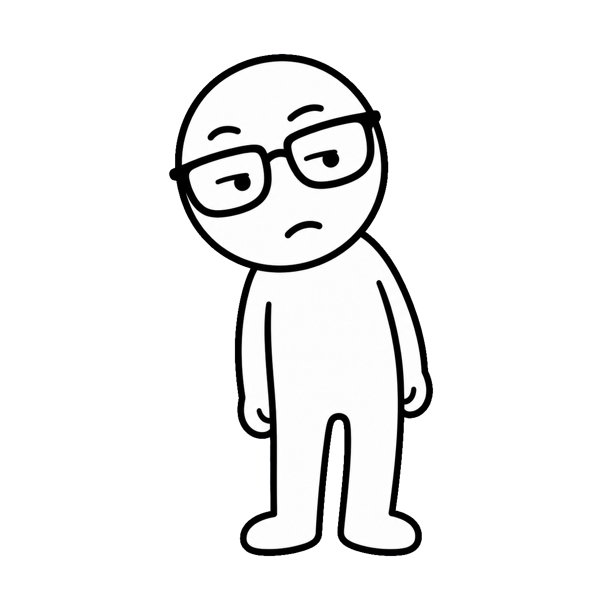
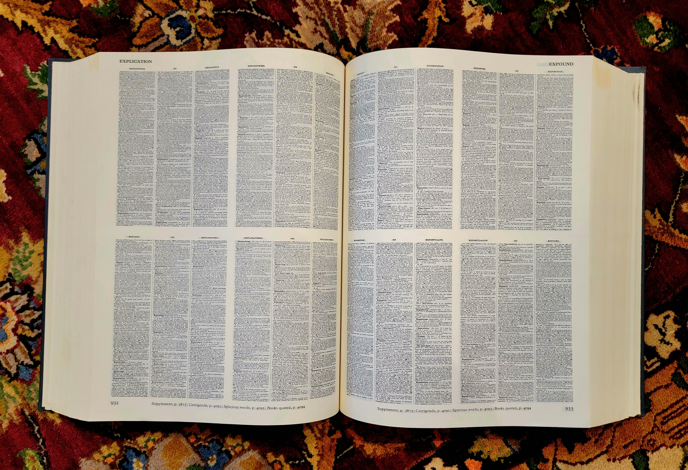
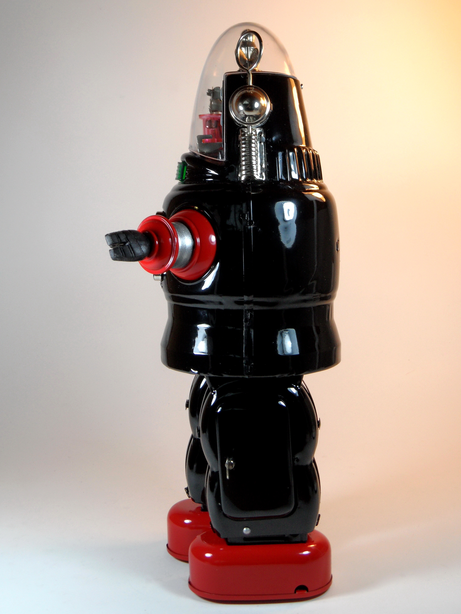
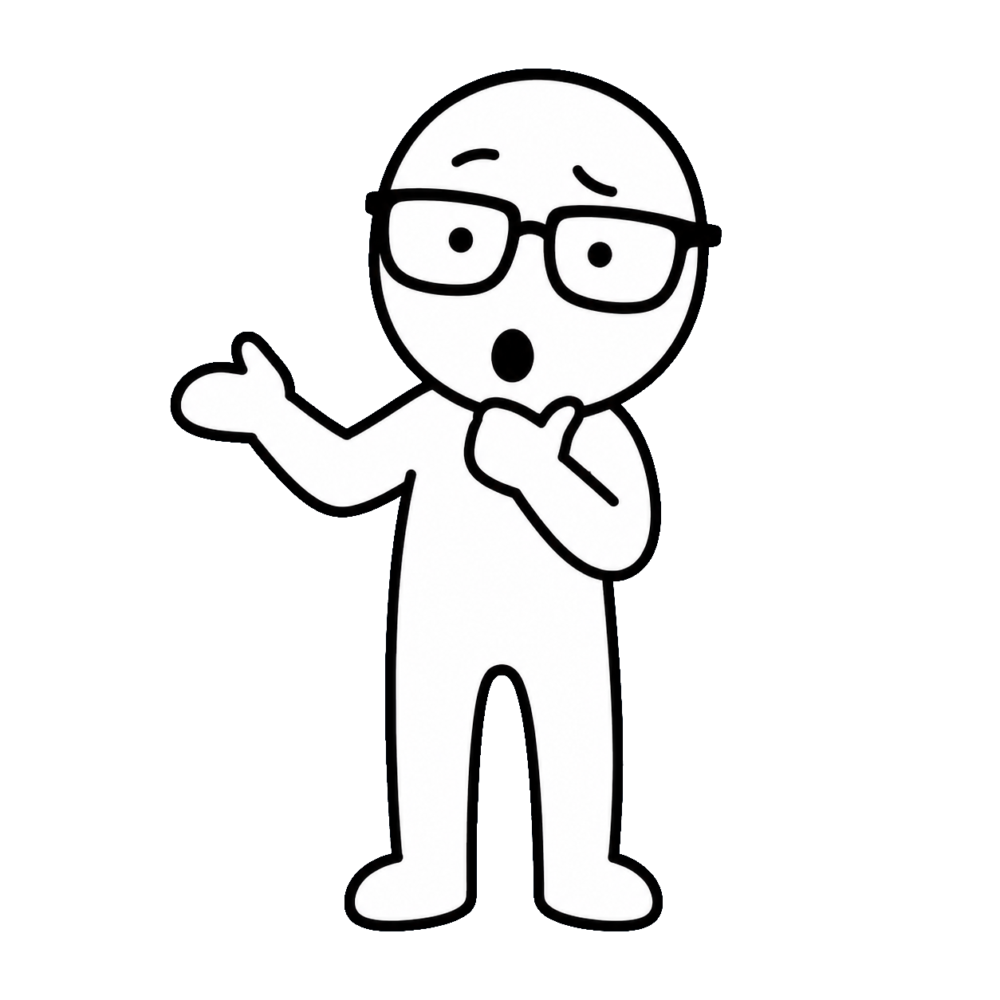
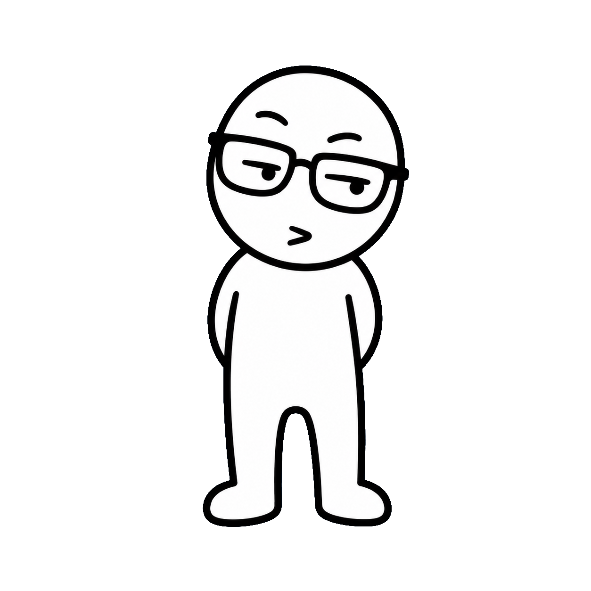
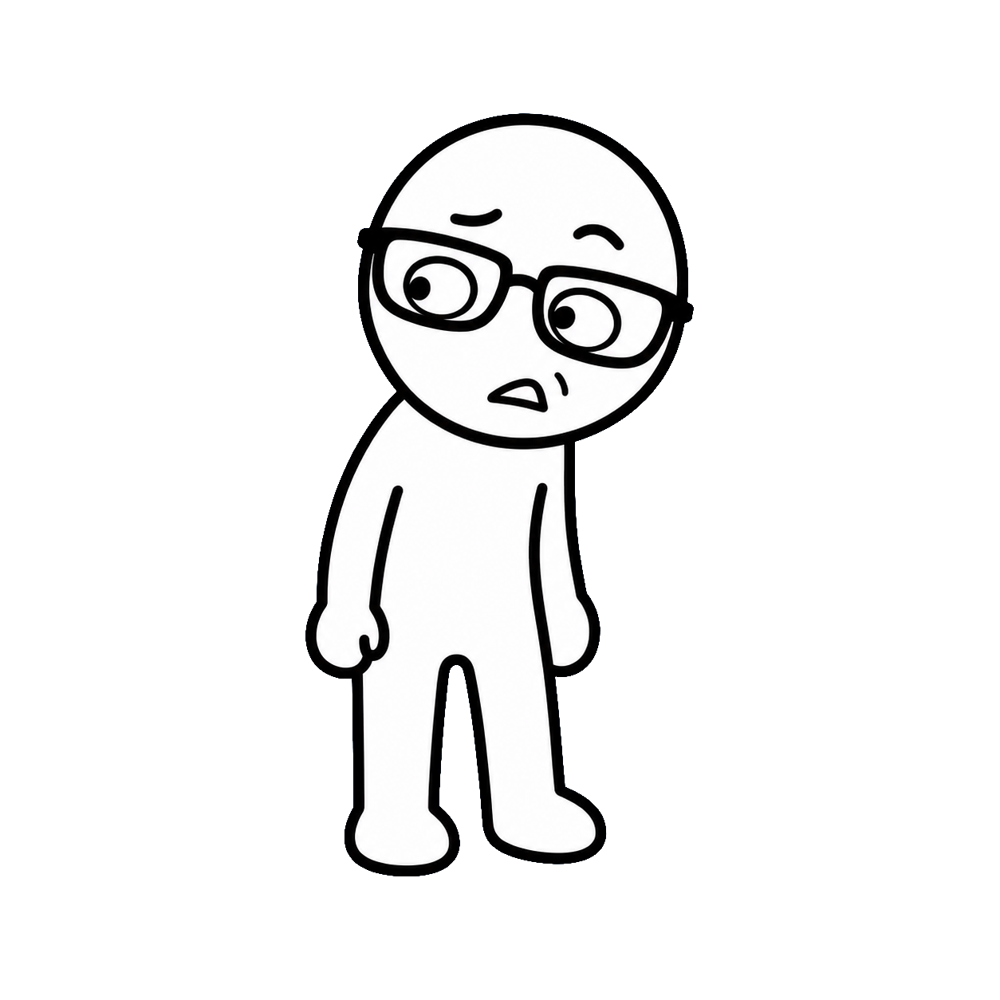

it finally
has a name...
has a name...
SLOP


grey mush
(yes... pig slop.)


slop
/slɒp/ noun
low-effort, mass-produced content, made to grab attention.
WORD OF THE YEAR 2025


"AI = EVIL ROBOTS"
nope.

(that's a different video.)

quieter... and dumber.
A MASTER PLAN

fake content = almost FREE
ATTENTION= PAID
QUALITYx ignored

a flood started.
STILL RISING
